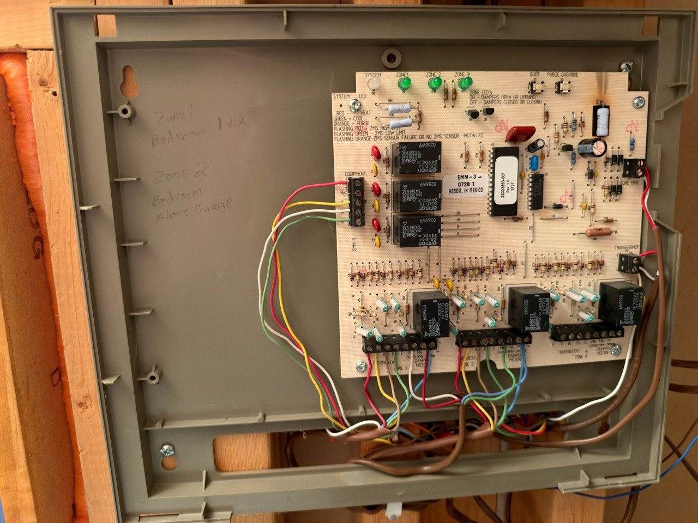
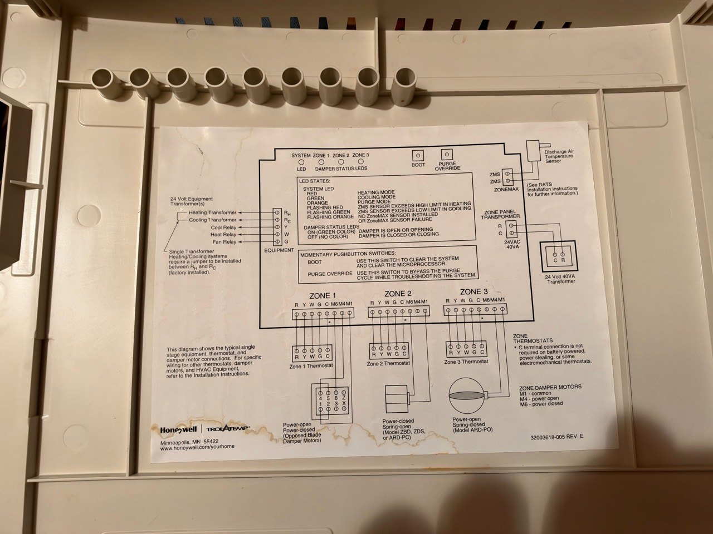

Attic air-zone panel
Confirmed
- Model / part
- Honeywell / Trol-A-Temp MiniZone EMM-3
- Location
- Attic wall below zone valves
Role in the system
Zone 1 Bedroom 1 & 2 = Rest of Second Floor. Zone 2 Bedroom Above Garage = Yellow Room. Zone 3 visibly unwired. Equipment connection to attic AM30 is suspected.
Cover defines M1 common, M4 power open, M6 power closed. Those are air-damper terminals, not the hydronic valve end switch. Zone 1 M6 white/M1 red; Zone 2 M6 green/M1 blue observed.
Locate and identify




Related evidence
Plumbing and placement · Controls and terminals · Wiring traces · Troubleshooting history
Manuals and references
- Honeywell EMM-3 Electronic MiniZone product data — Exact model